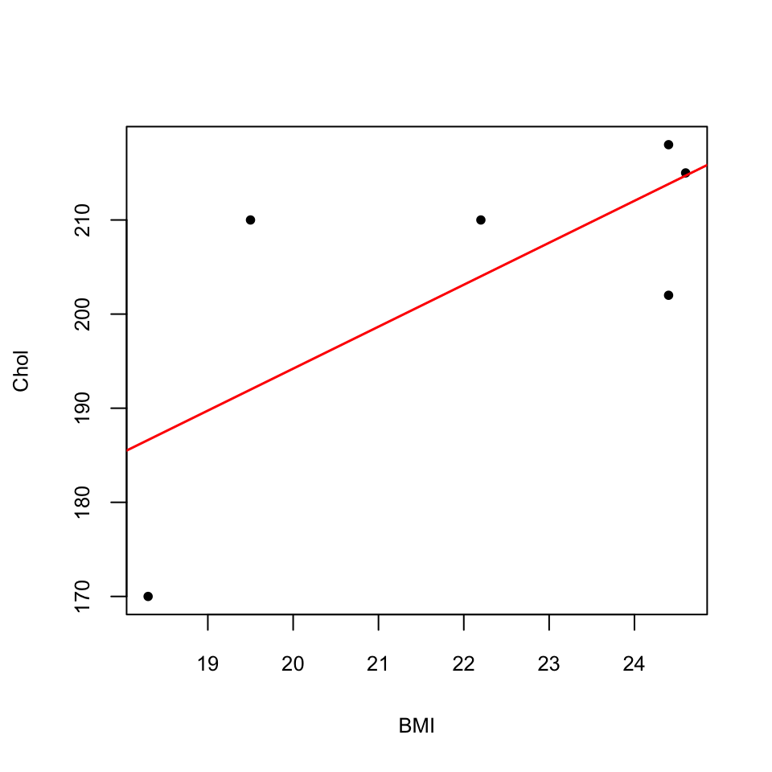
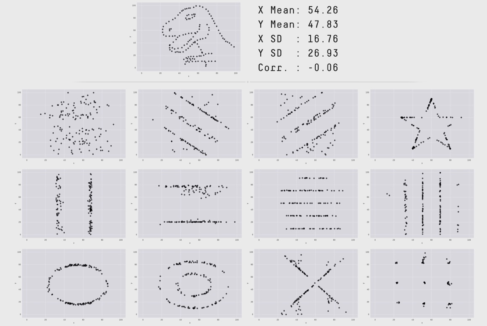

Tema 8 Introducció a l’estadística multidimensional
En general, les dades que es recullen en experiments són multidimensionals: mesuram diverses variables aleatòries sobre una mateixa mostra d’individus i organitzam aquesta informació en taules de dades on les fileres representen els individus observats i cada columna correspon a una variable diferent. És a dir, el que fem és avaluar un vector de variables aleatòries (en direm un vector aleatori) sobre els individus d’una població. En aquesta lliçó introduïm alguns conceptes nous sobre vectors de variables aleatòries i taules multidimensionals de dades quantitatives.
8.1 Poblacions: vectors aleatoris
Un vector aleatori de dimensió \(p\) és un vector format per \(p\) variables aleatòries \[ \underline{X}=(X_1,X_2,\ldots,X_p). \] Una realització de \(\underline{X}\) és un vector \((x_1,\ldots,x_p)\) format pels valors de \(X_1,\ldots,X_p\) sobre un individu. Una mostra de \(\underline{X}\) és un conjunt de realitzacions. Usualment, organitzam una mostra de \(\underline{X}\) per mitjà d’una taula de dades amb les columnes definides per les variables \(X_1,\ldots,X_p\) i on cada filera és una realització d’aquestes variables, és a dir, un vector format pels valors de \(X_1,\ldots,X_p\) sobre un individu de la mostra.
| BMI | C | E |
|---|---|---|
| 18.3 | 170 | 49 |
| 24.4 | 202 | 39 |
| 24.6 | 215 | 50 |
| 24.4 | 218 | 44 |
| 22.2 | 210 | 40 |
| 19.5 | 210 | 36 |
No confongueu vector aleatori amb mostra aleatòria. Tot i que tots dos es representen formalment per mitjà de vectors de variables aleatòries,
En un vector aleatori, en principi totes les variables són diferents i les avaluam sobre el mateix individu, obtenint un vector de mesures d’aquest individu
En una mostra aleatòria, totes les variables són còpies de la mateixa variable \(X\) i les avaluam cada una sobre un individu diferent, obtenint una mostra de valors de \(X\)
Siguin \(\underline{X}=(X_1,X_2,\ldots,X_p)\) un vector aleatori i \(\mu_i\) i \(\sigma_i\) la mitjana i la desviació típica, respectivament, de cada \(X_i\).
El valor esperat, o vector de mitjanes, de \(\underline{X}\) és el vector format pels valors esperats, o mitjanes, de les seves components: \[ E(\underline{X})=(\mu_1,\ldots,\mu_p). \] Per abreviar, de vegades indicarem aquest vector simplement amb \(\boldsymbol\mu\).
El vector de variàncies de \(\underline{X}\) és el vector format per les variàncies de les seves components: \[ \sigma^2(\underline{X})=(\sigma_1^2,\ldots,\sigma_p^2). \]
El vector de desviacions típiques de \(\underline{X}\) és el vector format per les desviacions típiques de les seves components: \[ \sigma(\underline{X})=(\sigma_1,\ldots,\sigma_p). \]
8.1.1 Covariància
La covariància de dues variables \(X\) i \(Y\) és una mesura del seu comportament conjunt. Formalment, donades dues variables aleatòries \(X,Y\) de mitjanes \(\mu_X\) i \(\mu_Y\), respectivament, la seva covariància és \[ \sigma_{X,Y}=E((X-\mu_X)\cdot ( Y-\mu_Y)). \] És fàcil comprovar que \[ \sigma_{X,Y}=E(X\cdot Y) -\mu_X\cdot \mu_Y. \]
La covariància de \(X\) i \(Y\) pot prendre qualsevol valor real (no com la variància, que sempre és positiva), i mesura el grau de variació conjunta de les variables en el sentit següent. Si quan \(X\) pren un valor gran sobre un individu, \(Y\) tendeix a també prendre’l gran, i quan \(X\) pren un valor petit sobre un individu, \(Y\) tendeix a també prendre’l petit, la seva covariància és positiva. Si, en canvi, quan \(X\) pren un valor gran sobre un individu, \(Y\) tendeix a prendre’l petit i vice versa, la seva covariància és negativa.
El signe de la covariància reflecteix la tendència de la relació entre les variables:
- Covariància positiva: Si \(X\) creix, \(Y\) tendeix a créixer, i si \(X\) decreix, \(Y\) tendeix a decréixer
- Covariància negativa: Si \(X\) creix, \(Y\) tendeix a decréixer, i si \(X\) decreix, \(Y\) tendeix a créixer
Si \(X\) i \(Y\) són variables independents, la seva covariància es 0, perquè en aquest cas \(E(X\cdot Y) =\mu_X\mu_Y\) i per tant \[ \sigma_{X,Y}=E(X\cdot Y) -\mu_X\cdot \mu_Y=\mu_X\cdot \mu_Y-\mu_X\cdot \mu_Y=0. \] El recíproc és fals: dues variables aleatòries poden tenir covariància 0 i no ser independents. Vegem un exemple d’aquest darrer fet:
Exemple 8.2 Suposem que tenim un dau tetraèdric no trucat amb les cares marcades amb els valors -2, -1, 1 i 2. Siguin \(X\) la variable aleatòria que consisteix a llançar el dau i anotar el resultat, i \(Y\) la variable aleatòria que consisteix a llançar el dau i anotar el quadrat del resultat obtingut. Com que les quatre cares del dau són equiprobables, \[ \begin{array}{l} \displaystyle P(X=-2)=P(X=-1)=P(X=1)=P(X=2)=\frac{1}{4}\\ \displaystyle P(Y=1)=P(Y=4)=\frac{1}{2} \end{array} \]
Com que \(Y\) és funció de \(X\), ja que \(Y=X^2\), \(X\) i \(Y\) no poden ser mai independents. Vegem que, en efecte, no ho són. Observau que els únics possibles valors per al vector \((X,Y)\) en una tirada del dau són (-2,4), (-1,1), (1,1) i (2,4), cadascun amb probabilitat 1/4. Llavors, per exemple, la probabilitat d’obtenir en una tirada \(X=-1\) i \(Y=4\) és 0, perquè és impossible, mentre que \[ P(X=-1)\cdot P(Y=4)=\frac{1}{4}\cdot\frac{1}{2}=\frac{1}{8}\neq 0. \]
Vegem ara que la covariància de \(X\) i \(Y\) es 0. Per calcular-la, primer necessitam calcular els valors esperats de les variables: \[ \begin{array}{l} \displaystyle \mu_X=(-2)\cdot \frac{1}{4}+(-1)\cdot \frac{1}{4}+1\cdot \frac{1}{4}+2\cdot \frac{1}{4}=0\\ \displaystyle \mu_Y=1\cdot \frac{1}{2}+4\cdot \frac{1}{2}=2.5 \end{array} \] Per tant \[ \begin{array}{l} \sigma_{X,Y}=E\big(X\cdot Y\big)-\mu_X\cdot \mu_Y=E\big(X\cdot Y\big)-0\cdot 2.5=E\big(X\cdot Y\big)\\ \qquad =P\big(X=-2,Y=4\big)\cdot (-2\cdot 4)+P\big(X=-1,Y=1\big)\cdot (-1\cdot 1)\\ \qquad\qquad\qquad +P\big(X=1,Y=1\big)\cdot (1\cdot 1)+P\big(X=2,Y=4\big)\cdot (2\cdot 4)\\ \qquad =\displaystyle \frac{1}{4}\cdot (-8)+\frac{1}{4}\cdot (-1)+\frac{1}{4}\cdot 1+\frac{1}{4}\cdot 8=0. \end{array} \] Així doncs, \(X\) i \(Y\) són variables dependents, però la seva covariància és 0.
Dues propietats importants més de la covariància:
La covariància és simètrica: \[ \sigma_{X,Y}=E((X-\mu_X)\cdot ( Y-\mu_Y))=E(( Y-\mu_Y)\cdot (X-\mu_X))=\sigma_{Y,X} \]
La covariància d’una variable aleatòria amb ella mateixa és la seva variància: \[ \sigma_{X,X}=E((X-\mu_X)^2)=\sigma^2(X) \]
La matriu de covariàncies d’un vector aleatori \(\underline{X}=(X_1,\ldots,X_p)\) és la matriu formada per les covariàncies dels parells de variables que la formen: \[ \sigma_{\underline{X},\underline{X}}=\begin{pmatrix} \sigma_{X_1,X_1} & \sigma_{X_1,X_2} & \ldots & \sigma_{X_1,X_p}\\ \sigma_{X_2,X_1} & \sigma_{X_2,X_2} & \ldots & \sigma_{X_2,X_p}\\ \vdots & \vdots &\ddots & \vdots\\ \sigma_{X_p,X_1} & \sigma_{X_p,X_2} & \ldots & \sigma_{X_p,X_p}\\ \end{pmatrix} \]
Aquesta matriu és simètrica i les entrades de la diagonal són les variàncies de les variables del vector, perquè \(\sigma_{X_i,X_i}=\sigma^2_{X_i}\).
8.1.2 Correlació
Com hem dit, el signe de la covariància té una interpretació senzilla, ja que reflecteix la tendència de la relació entre les variables. Emperò, la seva magnitud no té una interpretació senzilla. Aleshores, per mesurar la relació lineal entre dues variables aleatòries contínues s’usa l’anomenat coeficient de correlació lineal de Pearson (o correlació a seques), que ve a ser una versió normalitzada de la covariància. En concret, la correlació de les variables \(X\) i \(Y\) es defineix com el quocient de la seva covariància pel producte de les seves desviacions típiques: \[ \rho_{X,Y}=\frac{\sigma_{X,Y}}{\sigma_{X} \sigma_{Y}}, \]
La correlació té les propietats importants següents:
No té unitats (perquè les unitats de \(\sigma_X\) són les de \(X\), les unitats de \(\sigma_Y\) són les de \(Y\), i les unitats de \(\sigma_{X,Y}\) són les de \(X\) per les de \(Y\))
Pren valors entre -1 i 1: \(-1\leqslant\rho_{X,Y}\leqslant 1\)
És simètrica, \(\rho_{X,Y}= \rho_{Y,X}\)
La correlació d’una variable amb ella mateixa és 1: \(\rho_{X,X}=1\)
Si \(\rho_{X,Y}=\pm 1\), les variables \(X,Y\) tenen una relació lineal perfecta, és a dir, existeixen \(a,b\in \mathbb{R}\) tals que \(Y=a X+b\). La pendent \(a\) d’aquesta recta té el mateix signe que \(\rho_{X,Y}\).
Si \(\rho_{X,Y}=0\), diem que les variables \(X\) i \(Y\) són incorrelades. Notem que la correlació és 0 si, i només si, la covariància és 0. Per tant, si \(X\) i \(Y\) són independents, també són incorrelades. El recíproc en general és fals, com mostra l’Exemple 8.2.
La matriu de correlacions d’un vector aleatori \(\underline{X}=(X_1,\ldots,X_p)\) és la matriu formada per les correlacions de parells de les seves variables: \[ \rho(\underline{X}) =\begin{pmatrix} 1 & \rho_{X_1,X_2} & \ldots & \rho_{X_1,X_p}\\ \rho_{X_2,X_1} & 1 & \ldots & \rho_{X_2,X_p}\\ \vdots & \vdots & \ddots & \vdots\\ \rho_{X_p,X_1} & \rho_{X_p,X_2} & \ldots & 1\\ \end{pmatrix}. \] Aquesta matriu és simètrica per la simetria de la correlació.
8.2 Estadística descriptiva: Mostres
8.2.1 Covariàncies
Siguin \(x=(x_1,\ldots,x_n)\) i \(y=(y_1,\ldots,y_n)\) dos vectors obtinguts mesurant dues variables aleatòries \(X\) i \(Y\) sobre una mateixa mostra ordenada d’individus de mida \(n\) d’una població. Siguin \(\overline{x}\) i \(\overline{y}\) les seves mitjanes mostrals. Aleshores la seva covariància mostral és \[ \widetilde{s}_{x,y} =\frac{1}{n-1} \sum_{i =1}^n\big((x_{i}-\overline{{x}})(y_i-\overline{y})\big) \] i la seva covariància (a seques) és \[ {s}_{x,y} =\frac{1}{n} \sum_{i =1}^n\big((x_{i}-\overline{{x}})(y_i-\overline{y})\big)=\frac{n-1}{n}\widetilde{s}_{XY}. \] És a dir, com sempre, la diferència entre la versió “mostral” i la versió “a seques” rau en el denominador, \(n-1\) i \(n\) respectivament.
Com en el cas poblacional, la covariància entre dos vectors mesura la tendència que tenen les seves dades a variar conjuntament. Quan la covariància és positiva, si una \(x_i\) és gran o petita, la corresponent \(y_i\) tendeix a tenir el mateix comportament. Quan la covariància és negativa, aquesta tendència s’inverteix: si una \(x_i\) és gran, la corresponent \(y_i\) tendeix a ser petita, i viceversa.
És fàcil comprovar que:
- Les dues covariàncies són simètriques \[ \widetilde{s}_{x,y}=\widetilde{s}_{y,x},\ {s}_{x,y}={s}_{y,x} \]
- La variància d’un vector és la seva covariància amb ell mateix \[ \widetilde{s}_{x,x}=\widetilde{s}^2_{x},\ {s}_{x,x}={s}^2_{x}. \]
Les covariàncies de dos vectors estimen la covariància poblacional de les variables que han produït els vectors:
La covariància mostral \(\widetilde{s}_{x,y}\) sempre és un estimador no esbiaixat de la covariància poblacional \(\sigma_{X,Y}\)
La covariància a seques \(s_{x,y}\) és l’estimador màxim versemblant de \(\sigma_{X,Y}\) quan la distribució conjunta de les variables \(X,Y\) és el que s’anomena normal bivariant.
Exemple 8.3 Hem mesurat l’índex de massa corporal, BMI, i el nivell de colesterol en 5 individus sans. Guardam els resultats en un data frame i en calculam les mitjanes:
BMI= c(18.3,24.4,24.6,24.4,22.2,19.5)
Chol=c(170,202,215,218,210,210)
DF=data.frame(BMI,Chol)
mean(BMI)## [1] 22.23333mean(Chol)## [1] 204.1667Aleshores la covariància mostral d’aquests dos vectors és \[ \begin{array}{l} \dfrac{1}{5}\Big((18.3-22.23)(170-204.17)+(24.4-22.23)(202-204.17)\\ \qquad +(24.6-22.23)(215-204.17)+(24.4-22.23)(218-204.17)\\ \qquad +(22.2-22.23)(210-204.17)+(19.5-22.23)(210-204.17)\Big)=33.8333 \end{array} \]
i la seva covariància a seques és \[ \begin{array}{l} \dfrac{1}{6}\Big((18.3-22.23)(170-204.17)+(24.4-22.23)(202-204.17)\\ \qquad +(24.6-22.23)(215-204.17) +(24.4-22.23)(218-204.17)\\ \qquad +(22.2-22.23)(210-204.17)+(19.5-22.23)(210-204.17)\Big)=27.0667 \end{array} \]
La covariància mostral de dos vectors numèrics de la mateixa longitud \(n\) es calcula amb R amb la funció cov.
Per obtenir la seva covariància a seques, cal multiplicar el resultat de cov per \((n-1)/n\).
cov(BMI,Chol)## [1] 33.83333Considerem una taula de dades de la forma \[ \begin{array}{cccc} X_1 & X_2 & \ldots & X_p\\ \hline x_{1 1} & x_{1 2} &\ldots & x_{1 p}\\ x_{2 1} & x_{2 2} &\ldots & x_{2 p}\\ \vdots & \vdots & \ddots &\vdots\\ x_{n 1} & x_{n 2} &\ldots & x_{n p} \end{array} \] on cada columna representa els valors d’una certa variable \(X_i\) i cada filera un individu d’una mostra de la població, de manera que l’entrada \(x_{ij}\) d’aquesta taula és el valor de \(X_j\) sobre l’individu \(i\)-èssim de la mostra.
La matriu de covariàncies mostrals d’aquesta taula és la matriu \[ \widetilde{{S}}= \begin{pmatrix} \widetilde{s}^2_{X_1} & \widetilde{s}_{X_1,X_2} & \ldots & \widetilde{s}_{X_1,X_p}\\ \widetilde{s}_{X_2,X_1} & \widetilde{s}^2_{X_2} & \ldots & \widetilde{s}_{X_2,X_p}\\ \vdots & \vdots & \ddots & \vdots\\ \widetilde{s}_{X_p,X_1} & \widetilde{s}_{X_p,X_2} & \ldots & \widetilde{s}^2_{X_p} \end{pmatrix} \] i la matriu de covaiàncies (a seques) es defineix de manera similar, però amb les covariàncies a seques: \[ {S}= \begin{pmatrix} s^2_{X_1} & s_{X_1,X_2} & \ldots & s_{X_1,X_p}\\ s_{X_2,X_1} & s^2_{X_2} & \ldots & s_{X_2,X_p}\\ \vdots & \vdots & \ddots & \vdots\\ s_{X_p,X_1} & s_{X_p,X_2} & \ldots & s^2_{X_p} \end{pmatrix} \] Totes dues són simètriques.
La matriu de covariàncies mostrals es calcula amb la funció cov aplicada a la matriu o el data frame de variables numèriques que emmagatzema la taula de dades. Per calcular la matriu de covariàncies a seques, es multiplica el resultat de cov per \((n-1)/n\), on \(n\) és el nombre de fileres de la taula.
Exemple 8.4 Afegirem a la taula de dades de l’Exemple 8.3 una tercera variable amb les edats dels 6 individus representats en ella.
DF$Edats=c(49,39,50,44,40,36)
DF## BMI Chol Edats
## 1 18.3 170 49
## 2 24.4 202 39
## 3 24.6 215 50
## 4 24.4 218 44
## 5 22.2 210 40
## 6 19.5 210 36La matriu de covariàncies mostrals d’aquesta taula és
cov(DF)## BMI Chol Edats
## BMI 7.586667 33.83333 1.14
## Chol 33.833333 309.76667 -33.00
## Edats 1.140000 -33.00000 32.00Podreu observar que és simètrica, que a la diagonal hi obtenim les variàncies mostrals de les variables de la taula:
apply(DF,MARGIN=2,FUN=var)## BMI Chol Edats
## 7.586667 309.766667 32.000000i que l’entrada (2,1) coincideix amb la covariància de BMI i Chol que hem calculat abans.
8.2.2 Correlació de Pearson
Siguin \(x=(x_1,\ldots,x_n)\) i \(y=(y_1,\ldots,y_n)\) dos vectors obtinguts mesurant dues variables aleatòries \(X\) i \(Y\) sobre una mateixa mostra d’individus de mida \(n\) d’una població.
La correlació de Pearson de \(x\) i \(y\) és la seva covariància mostral dividida pel producte de les seves desviacions típiques mostrals: \[ r_{x,y}=\frac{\widetilde{s}_{x,y}}{\widetilde{s}_x\cdot \widetilde{s}_y}. \]
També és igual a la seva covariància dividida pel producte de les seves desviacions típiques, perquè els canvis de denominador se cancel·len: \[ r_{x,y}=\frac{\widetilde{s}_{x,y}}{\widetilde{s}_x\cdot \widetilde{s}_y}= \frac{\frac{n}{n-1}\cdot {s}_{x,y}}{\sqrt{\frac{n}{n-1}}\cdot {s}_x \cdot\sqrt{\frac{n}{n-1}}\cdot{s}_y}= \frac{s_{x,y}}{s_x \cdot s_y}=r_{x,y}. \]
Exemple 8.5 Tornem a la situació de l’Exemple 8.3. La covariància mostral i les desviacions típiques mostrals dels vectors BMI i Chol són
sd(BMI)## [1] 2.75439sd(Chol)## [1] 17.60019cov(BMI,Chol)## [1] 33.83333i per tant la seva correlació de Pearson és \[ r_{BMI,Chol}=\frac{33.833}{2.754\cdot 17.6}= 0.698 \]
La correlació de Pearson de dos vectors estima la correlació de les variables poblacionals que han produït els vectors. En concret
- \(r_{x,y}\) és un estimador màxim versemblant de \(\rho_{X,Y}\) quan la seva distribució conjunta és normal bivariant. N’és un estimador esbiaxiat, però el seu biaix tendeix a 0.
Altres propietats importants de la correlació de Pearson:
La correlació de Pearson és simètrica: \(r_{x,y}=r_{y,x}\)
La correlació de Pearson pren valors només entre -1 i 1: \(-1\leqslant r_{x,y}\leqslant 1\)
La correlació de Pearson d’un vector amb ell mateix és 1: \(r_{x,x}=1\)
\(r_{x,y}\) té el mateix signe que \(s_{x,y}\)
\(r_{x,y}=\pm 1\) si, i només si, existeixen \(a, b\in \mathbb{R}\) tals que \(y=ax+b\), és a dir, \(y_i=ax_i+b\) per a cada \(i=1,\ldots,n\). La pendent \(a\) d’aquesta relación lineal té el mateix signe que \(r_{x,y}\).
El coeficient de determinació \(R^2\) de la regressió lineal per mínims quadrats de \(y\) respecte de \(x\) és igual al quadrat de la seva correlació de Pearson: \[ R^2=r_{x,y}^2 \]
Amb R, la correlació de Pearson de dos vectors es pot calcular amb la funció cor. Per exemple, la correlació del Pearson dels vectors BMI i Chol s’obté amb
cor(BMI,Chol)## [1] 0.6979141Vegem que el seu quadrat és igual al \(R^2\) de la regressió lineal de Chol en funció de BMI:
cor(BMI,Chol)^2## [1] 0.487084summary(lm(Chol~BMI))$r.squared## [1] 0.487084Per fer-nos una idea de què representa aquest valor de la correlació, vegem el gràfic dels punts (BMI,Chol) amb la seva recta de regressió lineal:
plot(BMI,Chol,pch=20)
abline(lm(Chol~BMI),col="red",lwd=1.5)
Hi podem observar com Chol tendeix a créixer quan BMI creix.
Les funcions del paquet datasaurus us permeten crear conjunts de punts de “formes” diferents i mateixos estadístics, i en particular la mateixa correlació. Per exemple, tots els conjunts de punts del gràfic següent tenen la mateixa correlació.

Suposem que tenim una taula de dades de la forma \[ \begin{array}{cccc} X_1 & X_2 & \ldots & X_p\\ \hline x_{1 1} & x_{1 2} &\ldots & x_{1 p}\\ x_{2 1} & x_{2 2} &\ldots & x_{2 p}\\ \vdots & \vdots & \ddots &\vdots\\ x_{n 1} & x_{n 2} &\ldots & x_{n p} \end{array} \] on cada columna representa els valors d’una certa variable \(X_i\) i cada filera un individu d’una mostra de la població, de manera que l’entrada \(x_{ij}\) d’aquesta taula és el valor de \(X_j\) sobre l’individu \(i\)-èssim de la mostra.
La seva matriu de correlacions de Pearson és la matriu simètrica \[ \begin{pmatrix} 1 & r_{X_1,X_2} & \ldots & r_{X_1,X_p}\\ r_{X_2,X_1} & 1 & \ldots & r_{X_2,X_p}\\ \vdots & \vdots & \ddots & \vdots\\ r_{X_p,X_1} & r_{X_p,X_2} & \ldots & 1 \end{pmatrix} \]
Aquesta matriu de correlacions es calcula amb la funció cor aplicada a la matriu o el data frame de variables numèriques que emmagatzema la taula de dades. Per exemple, la matriu de correlacions de Pearson de la taula de dades DF de l’Exemple 8.4 és
cor(DF)## BMI Chol Edats
## BMI 1.00000000 0.6979141 0.07316517
## Chol 0.69791406 1.0000000 -0.33145274
## Edats 0.07316517 -0.3314527 1.000000008.2.3 Correlació de Spearman
La correlació de Pearson mesura específicament la tendència de dues variables contínues a dependre linealment l’una de l’altra. En circumstàncies en les quals no esperem aquesta dependència lineal, o en les quals les nostres variables siguin quantitatives discretes o simplement ordinals, emprar la correlació de Pearson per a analitzar la relació entre dues variables no és el més adequat. Entre les propostes alternatives, la més popular és la correlació de Spearman.
La correlació de Spearman de dos vectors \(x\) i \(y\) és la correlació de Pearson dels vectors de rangs de \(x\) i \(y\). El vector de rangs d’un vector \(x\) s’obté substituïnt cada valor de \(x\) per la seva posició en el vector ordenat de menor a major, i en cas d’empats assigna la mitjana de les posicions que ocuparien tots els empats (aquests rangs ja han sortit, al test de bondat d’ajust de Kolmogorov-Smirnov). Per exemple, el vector de rangs de \[ x=(4,5,1,5,1,3,4,4) \] és \[ (5,7.5,1.5,7.5,1.5,3,5,5) \] Com hem calculat aquest vector?
- Als dos elements 1 de \(x\) els tocarien les posicions 1, 2 del vector ordenat, i per tant el seu rang és la mitjana d’aquestes dues posicions: 1.5.
- A l’element 3 li tocaria la posició 3 del vector ordenat, i com que només n’hi ha un, aquest és el seu rang.
- Als tres elements 4 els tocarien les posicions 4, 5 i 6 del vector ordenat, i per tant el seu rang és la mitjana d’aquestes tres posicions: 5.
- Finalment, als dos elements 5 els tocarien les posicions 7, 8 del vector ordenat, i per tant el seu rang és la mitjana d’aquestes dues posicions: 7.5.
rank:
rank(c(4,5,1,5,1,3,4,4))## [1] 5.0 7.5 1.5 7.5 1.5 3.0 5.0 5.0Amb R, la correlació de Spearman es calcula directament amb la funció cor entrant-li el paràmetre method="spearman". (El valor per defecte del paràmetre method és "pearson" i per això no l’indicam quan calculam la correlació de Pearson.)
Exemple 8.6 Calculem a mà la correlació de Spearman dels vectors BMI i Chol. El primer que farem serà calcular els rangs dels valors
\[ \begin{array}{|c|c||c|c|} \hline \mathit{BMI} & \mathit{Rang} & \mathit{Chol}& \mathit{Rang} \\\hline\hline 18.3& 1 & 170& 1 \\ 24.4&4.5 & 202 & 2\\ 24.6&6 & 215& 5 \\ 24.4&4.5 & 218& 6\\ 22.2&3 & 210& 3.5\\ 19.5&2 & 210& 3.5\\\hline \end{array} \]
Per tant, la correlación de Spearman de \[ \mathit{BMI}=(18.3, 24.4, 24.6, 24.4, 22.2, 19.5)\mbox{ i }\mathit{Chol}=(170, 202, 215, 218, 210, 210) \] és la correlació de Pearson de \[ (1, 4.5, 6, 4.5, 3, 2)\mbox{ i }(1, 2, 5, 6, 3.5, 3.5) \]
Comprovem-ho:
cor(BMI,Chol,method="spearman")## [1] 0.6470588cor(c(1,4.5,6,4.5,3,2),c(1,2,5,6,3.5,3.5))## [1] 0.64705888.2.4 Contrastos de correlació
En un contrast de correlació de dues variables poblacionals \(X\) i \(Y\), la hipòtesi nul·la és que no hi ha correlació entre les dues variables, la qual cosa s’entén que tradueix que no hi ha cap relació entre elles. \[ \left\{ \begin{array}{ll} H_0: & \rho_{XY}=0\\ H_1: & \rho_{XY}> 0\text{ o }\rho_{XY}< 0\text{ o }\rho_{XY}\neq 0 \end{array}\right. \]
No explicarem com es fa a mà aquest contrast ni quines hipòtesis han de satisfer les variables poblacionals per que el resultat sigui fiable. Simplement heu de saber que s’efectua amb la funció cor.test. Si estau interessats en el detall, podeu consultar la corresponent entrada de la Wikipedia.
Exemple 8.7 Volem contrastar si hi ha correlació positiva entre el BMI i el nivell de colesterol d’un adult sa, amb un nivell de significació del 5%.
Variables poblacionals d’interès:
- \(\mathit{BMI}\): “Prenem un adult sa i mesuram el seu BMI”
- \(\mathit{Chol}\): “Prenem un adult sa i mesuram el nivell de colesterol en mg/dl”
Contrast: \[ \left\{ \begin{array}{ll} H_0: & \rho_{\textit{BMI,Chol}}=0\\ H_1: & \rho_{\textit{BMI,Chol}}>0 \end{array}\right. \]
Emprarem les mostres BMI i Chol de l’Exemple8.3.
cor.test(BMI,Chol,alternative="greater")##
## Pearson's product-moment correlation
##
## data: BMI and Chol
## t = 1.949, df = 4, p-value = 0.06155
## alternative hypothesis: true correlation is greater than 0
## 95 percent confidence interval:
## -0.08621998 1.00000000
## sample estimates:
## cor
## 0.6979141Conclusió: No hem obtingut evidència estadísticament significativa que el BMI i el nivell de colesterol d’un adult sa tenguin correlació positiva (test de correlació, p-valor 0.06, IC 95% per a la correlació de \(-0.086\) a 1).